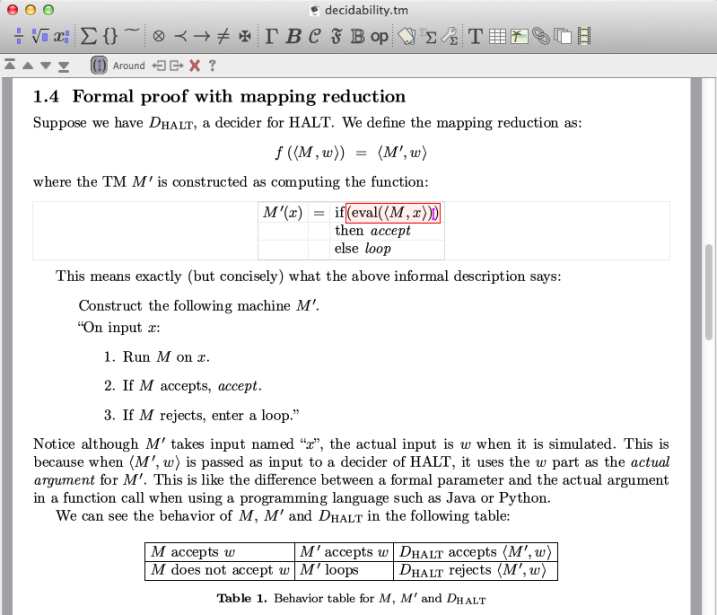
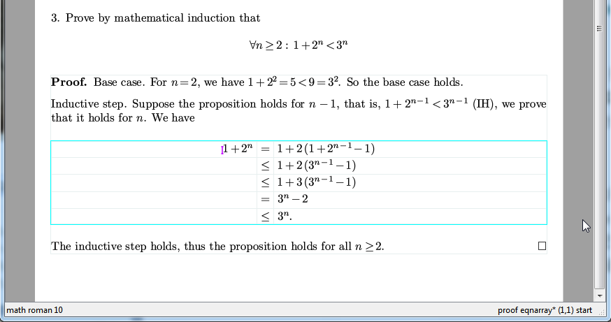

å¥½ä¹ æ²¡ææ¨èè¿èªå·±å欢ç软件äºï¼ç°å¨æ¨èä¸æ¬¾æå¨ç¾å½åæ°å¦ä½ä¸çç§å®¶æ³å®ï¼TeXmacsãæææä¸å¯è½è·ä»¥åé£ä¹æé²å¿å个é¿ç¯ç TeXmacs 说æææ¡£äºï¼ä¸è¿è¿ä¸è¥¿å¦æ¤çç®å好ç¨ï¼æ以åºæ¬ä¸ä¸ç¨æåä»ä¹ææ¡£äºãé´äºç¥éç人å¾å°ï¼ä¸ç解å®ç人å¾å¤ï¼è¿éåªæ¯å¸®å®æ个广åï¼åä¸ä¸èå£ã
TeXmacs ç主è¦ç¹ç¹æ¯ï¼
è· Lyx çä¸åï¼å®ä¸æ¯ä¸ä¸ª TeX çâå端âï¼èæ¯ä¸ä¸ªå®å ¨ç¬ç«çï¼è¶ è¶ TeX çç³»ç»ãTeXmacs æ¥æè· TeX ç¸åï¼çè³æ´å¥½çæçç¾è§ç¨åº¦ãè¿æ¯å 为å®éç¨è· TeX ä¸æ ·çæçç®æ³ï¼å¹¶ä¸ç¨ C++ éæ°å®ç°ãæ®è¯´å页çç®æ³æ¯ TeX çè¿è¦å¥½äºã
æ¥æè¶ è¶ Word ï¼æè ä»»ä½ä¸æ¬¾åå¤ç软件ï¼çï¼çæ£çâæè§å³æå¾â (WYSIWYG)ãWord æè°çâæè§å³æå¾âå ¶å®æ¯åçãæè§å³æå¾çå«ä¹åºè¯¥æ¯ï¼å±å¹ä¸æ¾ç¤ºçå 容ï¼è·æå°ä¸æ¥çå®å ¨ä¸æ ·ãå¯æ¯ Word è½åå°åï¼æå°ä¸ä¸ªææ¡£åºæ¥ä½ å°±åç°è·å±å¹ä¸æ¾ç¤ºçæå¾å¤§åºå«ï¼ä¸è¬æ¥è¯´å±å¹ä¸æ¾ç¤ºçè¦ç²ç³ä¸äºãä¸äº TeX çå端ï¼æ¯å¦ Lyx, Scientific Workspace çä¹æ¯ç±»ä¼¼çï¼å®ä»¬é½ä¸è½è¾¾å°çæ£çæè§å³æå¾ã
ç´æ¥å¯å¨å±å¹ææ¡£éç»å¾ãå®å ¨å¯è§åçè¡¨æ ¼ï¼å ¬å¼ç¼è¾ç¯å¢ãè¿äºé½æ¯æ¯ TeX æ¹ä¾¿é«æå¾å¤çæ¹å¼ãéè¦å½å¿çæ¯ï¼ç¨è¿ TeXmacs ä¸æ®µæ¶é´ä¹åï¼ä½ ä¼åç°åå° TeX çå ¬å¼ç¼è¾æ¹å¼ç®ç´å°±ååå°åå§ç¤¾ä¼ã
é常人æ§åçæé®è®¾è®¡ãæ¯å¦ï¼å¨æ°å¦å ¬å¼ç¯å¢ä¸ï¼ä½ æä»»æä¸ä¸ªå符ï¼ç¶åå°±å¯ä»¥ç¨å¤æ¬¡ TAB é®ç¸ç»§éæ©âææç¸åâçå符ã举个ä¾åï¼å¦æä½ æ @ï¼ç¶ååæå ä¸ TABï¼å°±ä¼åç°è¿ä¸ªå符åæåç§åæ ·çååå½¢çå符ãå¦æä½ æ >ï¼åæ =ï¼å°±ä¼åºç°å¤§äºçäºå·ï¼ä¹ååæ TABï¼å°±ä¼ç¸ç»§åºç°å¤§äºçäºå·çåç§åä½ã
å¨ç´è§çåæ¶ä¸å¤±å»å¯¹åºå±ç»æçæ§å¶ãæ¯å¦ï¼ï¼è§ä¸å¾ï¼çªå£å³ä¸è§çç¶ææ ï¼æ¾ç¤ºåºå½åå æ ä½ç½®çâä¸ä¸æâæ¯âproof eqnarry* (1,1) startâï¼è¿è¡¨ç¤ºçæ¯è¿æ¯å¨ä¸ä¸ª proof ç¯å¢éç eqnarry çåæ (1,1) çå¼å§å¤ãå½ä½ ä½¿ç¨ Ctrl-Backspaceï¼æé è¿å æ çé£å±âç¯å¢âä¼è¢«å é¤ãæ¯å¦ï¼å¦æä½ ç°å¨çåä½æ¯æä½ï¼é£ä¹å¨ Ctrl-Backspace ä¹åï¼åä½å°±ç«å³è¿åææ£ä½ã

ç»æåçæµè§åè½ãæ¯å¦ï¼æ Ctrl-PgUp, Ctrl-PgDn å°±å¯ä»¥å¨âç¸åç±»åâçç»æéä¸ä¸è·³è½¬ãæ¯å¦ï¼å¦æä½ å¨å°èæ é¢éæè¿ä¸ªé®ï¼å°±å¯ä»¥è¿ éçæµè§ææçå°èæ é¢ãå¦æä½ å¨æ°å¦å ¬å¼éæè¿ä¸ªé®ï¼å°±å¯ä»¥è¿ éæµè§ææçæ°å¦å ¬å¼ã
ä¸äº¤äºå¼ç¨åºæ¥å£ãæ¯æå¾å¤ç§è®¡ç®æºä»£æ°ç³»ç»ï¼å交äºå¼è½¯ä»¶ï¼æ¯å¦ MAXIMAï¼Octaveï¼â¦â¦ è¿äºç³»ç»è¿åçæ°å¦å ¬å¼ä¼ç´æ¥è¢« TeXmacs æ¾ç¤ºä¸ºâTeX ææâãä½¿ç¨ Scheme ä½ä¸ºåµå ¥å¼è¯è¨ï¼å¹¶ä¸å¯ä»¥ä½¿ç¨å®æ¥æ©å±ç³»ç»ãè¿æ¯èµ· TeX çè¯è¨æ¯é常大çè¿æ¥ã
ç®åç±äº TeX çåæå°ä½ï¼ä»¥åç±äº TeXmacs æ¯æ³å½äººåçï¼è¿ä¸ªç³»ç»å¨ç¾å½è¿ä¸æ¯å¾æµè¡ï¼å¾å¤äººé½æ²¡å¬è¯´è¿æè¿ç§ä¸è¥¿åå¨ãå¦æ¯åçå¾å¤äººç±äºåå°æç§é误ææ³çâæ´èâï¼é½ä¸ç解è¿ç§å¾å½¢åç¼è¾è½¯ä»¶çä»·å¼ãå¸æä¸å½äººæ°åæ³å½äººæ°ä¸æ ·åæ¥å± ä¸ï¼è¶ è¶ç¾å½ã
æ³è¦è¿ éçææ¡ TeXmacs çåºæ¬ç¨æ³ï¼å¯ä»¥åèæç»å¶ç TeXmacs æ维导å¾ï¼